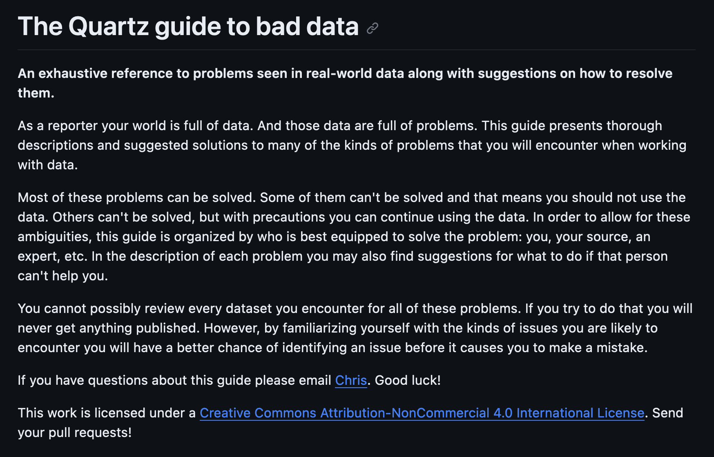
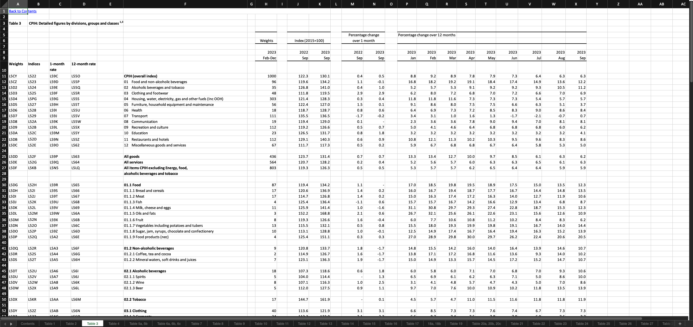
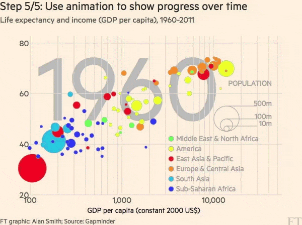
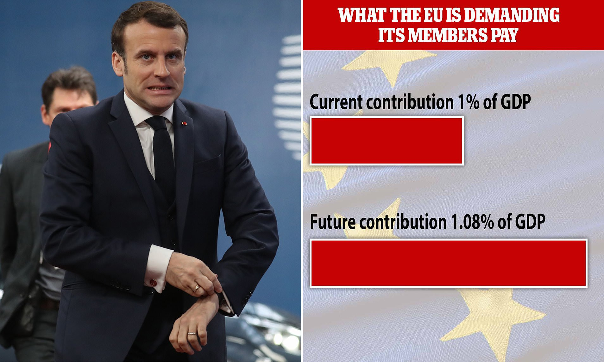
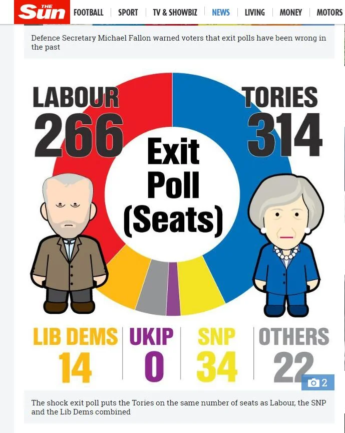
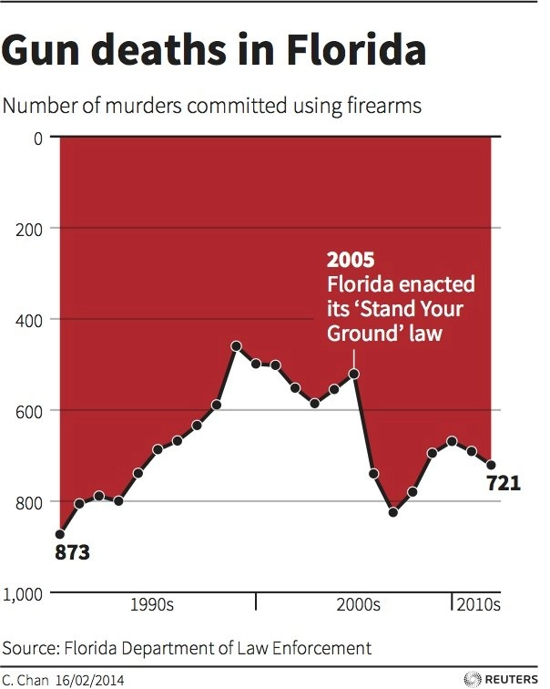

Analiză și Storytelling de Date
👋 Bun venit la training-ul
“Analiză și Storytelling de Date”
Cine sunt eu?
Mă numesc Nicu Calcea.
Sunt jurnalist de investigație în domeniul datelor.
Am absolvit și predat la City, University of London, și am făcut jurnalism de date la Global Witness, BBC News și New Statesman. În Moldova am fost co-fondator al Privesc.Eu și reporter la Moldova.org.
Publicațiile mele
Mai multe informații despre mine
Introduceri
- Cum vă numiți?
- De ce ați ales să participați la acest training?
- Ce experiență aveți în jurnalismul de date?
Program
- 10:00 — Introduceri și obiective
- 10:15 — Ce este jurnalismul de date?
- 11:30 — Baze de date
- 11:45 — Exercițiu: Disparitatea salarială de gen
- 12:30 — Pauză
- 13:30 — Instrumente AI
- 14:15 — Vizualizarea datelor
- 15:00 — Exercițiu: TBD
- 15:30 — Exercițiu de grup: redactarea unui scurt articol pe baza datelor reale
- 16:30 — Întrebări și răspunsuri, resurse suplimentare, discuții
Ce este jurnalismul de date?
În definiția sa cea mai simplă, jurnalismul de date este practica de a folosi numere și tendințe pentru a spune o poveste. — Betsy Ladyzhets
Jurnalismul de date este găsirea – în date – a materialelor jurnalistice care sunt de interes pentru public și prezentarea lor în cel mai potrivit mod pentru utilizarea și reutilizarea de către public. — Bahareh Heravi
De ce avem nevoie de jurnalismul de date?
Materiale jurnalistice mai profunde
Tot mai mult din activitatea umană este înregistrată și stocată ca date. Asta înseamnă că există potențial pentru jurnalism de date pentru aproape orice subiect.
Eficiență
Deseori, munca noastră e repetitivă. Putem simplifica și automatiza monitorizarea, colectarea și analiza informațiilor publice, oferindu-ne mai mult timp pentru a ne concentra pe subiecte mai profunde.
Precizie
Datele ne ajută să verificăm afirmațiile făcute de politicieni, funcționari, oameni de afaceri, și alții.
Materiale jurnalistice noi
Jurnaliștii pot crea materiale noi pe baza datelor pe care nu ar putea să le acopere altfel.
Știri personalizate
Putem crea materiale personalizare pentru cititori pe baza localității în care locuiesc, vârstei sau statutului socio-economic.
Audiențe noi
Jurnalismul de date poate atrage noi audiențe, inclusiv tineri și persoane care nu citesc ziarele tradiționale.
Sursă: OpenNews
Procesul
Întrebare
Ca și în cazul jurnalismului tradițional, jurnalismul de date începe cu o întrebare pe care reporterul vrea să o răspundă.
Identificarea surselor
Datele pot veni din surse oficiale, de la societatea civilă, alte terțe părți, sau pot fi colectate direct de către reporter.
Curățarea și structurarea datelor
În majoritatea cazurilor, reporterul trebuie să filtreze, sorteze și să corecteze erori sau informații lipsă din setul de date.
Procesul
Analiza datelor
Cum găsești răspunsul la întrebarea ta în date?
Verificarea datelor
Datele nu mint, însă cei care le publică o fac. Au concluziile analizei tale sens? Le poți verifica din alte surse?
Prezentare
Analiza poate fi comunicată publicului în mai multe moduri. Uneori, dar nu întotdeauna, jurnaliștii de date vor vizualiza rezultatele analizei.

Sursă: Paul Bradshaw
Sursă: Paul Bradshaw
Baze de date
Soursă: SAMIZDATA
Exercițiu: Disparitatea salarială de gen
Exercițiu: Disparitatea salarială de gen
- Deschideți pagina Statbank
- Accesați secțiunea “Statistica gender” -> Abilitarea economica a femeilor -> Disparitatea salariala de gen pe activitati economice, 2013-2025
- Selectați toate activitățile economice și anii 2013-2025, apoi apăsați “Continuă”
- Descărcați fișierul Excel și încărcați-l în Google Drive, deschideți-l cu Google Sheets
Exercițiu: Disparitatea salarială de gen
- Copiați foaia de calcul, nu faceți modificări în original.
- Ștergeți antetul și subsolul.
- View -> Freeze top row -> View -> Freeze first column.
- Sortați după coloana 2025.
- Ștergeți rândurile “B+C+D+E Industrie total”, “S Alte activitati de servicii” și “0 Activitati economice - total”.
Exercițiu: Disparitatea salarială de gen
- Creați un grafic nou în Datawrapper.
- Copiați tabelul creat în Datawrapper, selectați limba română, bar chart.
- Personalizați graficul, adăugați titluri și surse. Aveți grijă la diferența dintre puncte și puncte procentuale.
- Publicați și/sau descărcați graficul.
GenderPulse
Sursă: GenderPulse
Datele nu sunt neutre
- Datele publicate reflectă prejudecățile și limitele autorilor.
- Majoritatea indicatorilor — atât în Moldova cât și în afară — nu sunt dezagregate pe gen.
- Datele agregate pot ascunde diferențe importante. La ce vârste și în ce grupuri sociale sunt disparitățile de gen mai mari?
- Când datele nu există, creați-le!
Asigurați-vă că munca voastră e verificabilă
Concepte importante:
Documentație
- păstrați neschimbate referințele la datele sursă
- dacă este necesar, adăugați un dicționar de date sau notați ce ați făcut
- folosiți denumiri adecvate pentru coloane (nu „greutate”) și foi de calcul (nu „Foaie1”)
- o întrebare = o foaie de calcul
Reproductibilitate
- efectuați analizele pe o foaie nouă, niciodată pe datele originale
- protejați foaia de calcul originală
- faceți copii de rezervă frecvent
Pregătirea datelor
Sursă: Datawrapper
Date lipsă
Uneori, înregistrările dispar sau nu au fost colectate niciodată. Nu este întotdeauna evident când asta se întâmplă.
Date duplicate
Înregistrările pot fi repetate, fie din cauza unor erori tehnice, fie din cauza introducerii repetate a datelor.
Greșeli ortografice
Oamenii fac greșeli. Presupuneți că orice set de date creat manual de oameni conține greșeli ortografice.
Formatare necorespunzătoare
Unele foi de calcul sunt concepute pentru a fi citite de oameni, nu de calculatoare. Prin urmare, trebuie să învățăm programele să le citească corect.
Erori de analiză
O formulă Excel greșită? Caractere n€©unoș©uț€? O versiune veche de Excel? Toate acestea pot afecta datele tale.
Date inconsistente
O coloană poate conține unități de măsură diferite, poate denumi categoriile în mod diferit sau poate înregistra metodologii diferite.
Ghidul datelor eronate

Sursă: Quartz

Sursă: ONS
=A1+A2
Calculează suma (+) sau diferența (-) dintre două numere.
=A1*B1
Multiplică (*) sau divizează două numere.
=SUM()
Calculează suma unui șir de numere (de exemplu, o coloană).
=AVERAGE()
Calculează media unui șir de numere.
[=MEDIAN()]
Calculează mediana unui șir de numere.
=(NOU-VECHI)/VECHI
Calculează (des)creșterea procentuală între două valori.
=IF()
Returnează o valoarea dacă rezultatul e adevărat, alta dacă e fals.
=COUNTIF()
Numără celulele care îndeplinesc o anumită condiție.
=SUMIF()
Sumează toate celulele care îndeplinesc o anumită condiție.
=CONCATENATE()
Combină mai multe fragmente de text. Pentru operația inversă, utilizați funcția =SPLIT().
=VLOOKUP()
Asociază valorile dintr-o celulă cu rândul corespunzător dintr-un alt set de date.
=XLOOKUP()
Similar cu funcția =XLOOKUP(), dar mai flexibil și mai ușor de înțeles.
Pauză
Instrumente AI
Inteligența Artificială (AI) poate automatiza anumite procese în jurnalism și analiza de date.
AI-ul însă poate halucina, și trebuie utilizat responsabil.
Tipuri de instrumente AI
Skills
Agenții AI pot căpăta abilități (skills) noi pentru sarcini specifice. Acestea pot fi instalate din surse externe sau create de tine.
MCP / Plugin-uri
MCP (Model Context Protocol) este un sistem de plugin-uri standardizat pentru agenții AI. Și acestea pot fi instalate din surse externe.
Agenți dedicați
Pentru anumite sarcini, există agenți specializați care pot fi folosiți direct, fără a fi nevoie de conigurare sau instalarea slills-urilor sau plugin-urilor.
Skills
“Agent Skills” este un standard pentru a extinde abilitățile agenților AI. Pentru jurnalism, abilitățile pot include instrumente de lucru cu PDF-uri sau documente Excel, crearea graficelor, sau accesarea anumitor baze de date.
Skill-urile pot fi create ad-hoc de către agenții AI sau manual de către jurnalist.
Skills: Exemple
- Journalism agent skills
- Spotlight
- Creează propriile skill-uri
MCP / Plugin-uri
MCP (Model Context Protocol) este un standard pentru a crea instrumente pentru agenții AI.
MCP: Exemple
- OpenRegistry
- Datawrapper MCP
- mcptools / btw pentru R
Agenți dedicați
Pe lângă skill-uri și plugin-uri, jurnaliștii pot utiliza agenți AI creați pentru anumite sarcini specifice. Aceștia sunt de obicei creați de programatori și sunt integrate în alte soft-uri sau platforme.
Agenți dedicați: Exemple
Vizualizarea datelor
De ce vizualizăm datele?
Sintetizarea datelor nu este întotdeauna suficientă pentru a identifica tendințe.
Vizualizarea acestora ne poate oferi informații pe care altfel le-am pierde.


Ce putem vizualiza?
Poziție 
Mărime
Lățime 
Înălțime 
Suprafață 
Culoare
Umplutură 
Culoare 
Transparență
Model
Formă 
Locație 
Ce tipuri de codificare vizuală puteți identifica în acest grafic?

Graficul de dispersie FT
Grafic de dispersie 
Scară logaritmică 
Schimbă mărimile 
Colorează 
Animează anii
Instrumente pentru grafice
Sursă: ddj.nicu.md
Tipuri de grafice
Bare/coloane

Dreptunghiuri orizontale sau verticale în care lungimile sunt proporționale cu valorile pe care le reprezintă.
Potrivit pentru a compara numere sau a arăta trend-uri.
Linii

Arată numere pe o scară continuă. Similar cu un graficul de dispersie, doar că punctele sunt conectate.
Potrivit pentru a arăta trend-uri.
Grafic de suprafață

Asemănătoare graficelor cu linii, însă suprafață de sub linie este coloarată. Suprapuse, pot arăta trend-uri cumulative.
Potrivit pentru a arăta trend-uri.
Grafic de dispersie
Reprezintă grafic un set de date pe două dimensiuni continue, fiecare pe o axă diferită (X și Y).
Potrivit pentru a ilustra corelația dintre diferite serii de date.
Hartă

Funcționează doar cu date geografice (evident!).
Chiar și în cazul datelor geografice, alte tipuri de diagrame pot fi adesea o alegere mai bună.
Anatomia unui grafic

Sursă: BBC News
Alegerea culorilor

Sursă: Datawrapper
Reprezentarea genului
Sursă: Datawrapper
Instrumente
Sursă: SAMIZDATA
Font-uri
Sursă: Datawrapper
Grafice eronate: Daily Mail

Sursă: Daily Mail
Grafice eronate: The Sun

Sursă: The Sun
Grafice eronate: Reuters


Sursă: Reuters
Grafice eronate: CBS News

Sursă: CBS News
Grafice eronate: PAS

Sursă: Natalia Gavriliță
Grafice eronate: PAS

Sursă: Natalia Gavriliță
Grafice eronate: PAS

Sursă: Nicu Calcea
WTF Visualizations
Sursă: WTF Visualizations
Execițiu: Prenumele nou-născuților
Care este cel mai popular prenume pentru bebelușii din Moldova?
- Descărcați rapoartele pentru 2023 și 2022.
- Folosiți Tabula pentru a extrage tabelele din PDF-uri.
- Încărcați tabelele în Google Sheets și curățați-le.
- Creați un grafic/tabel în Datawrapper.

SAMIZDATA · Analiză și Storytelling de Date